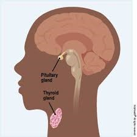

Prediction
Prediction Result
Thyroid disease is a general term for a medical condition that keeps your thyroid from making the right amount of hormones.
Your thyroid typically makes hormones that keep your body functioning normally.
When the thyroid makes too much thyroid hormone, your body uses energy too quickly. This is called hyperthyroidism
{{data}}
